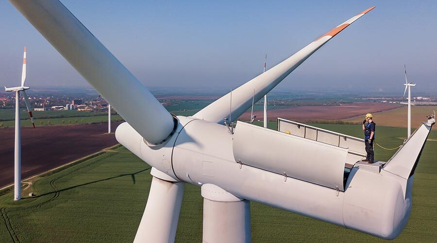
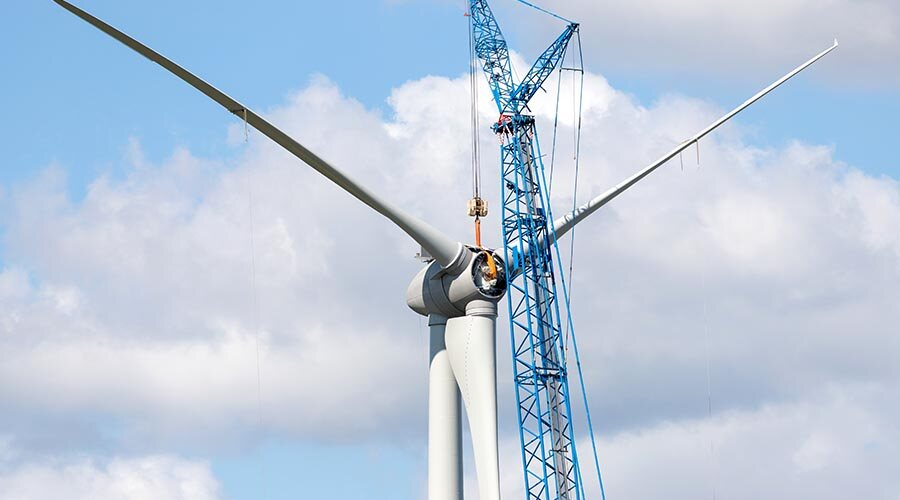

Start / Leistungen / Starkes Wachstum nachhaltig umsetzen
Starkes Wachstum nachhaltig umsetzen.
Kundennutzen, Vorgehen und Erfahrung, belegt mit 9 Fallbeispielen.
Kundennutzen
Was Sie davon haben.
Höhere Marge durch Nutzengenerierung beim Kunden bzw. dessen Kunden
Modularer skalierbarer Wachstumsplan mit Risikoschranken
Vermeidung typischer Gefahren bei großem Wachstum
Wachstum der Marktanteile
Umsatzrendite erhöht
Vorgehen
Was ich dafür mache.
- Gesamtheitliche unternehmerische Analyse der Ist- Situation
- Analyse der Wertschöpfungskette und Potentiale der Nutzengenerierung bei Kunden und dessen Kunden
- Abgleich mit der Unternehmensstrategie
- Erarbeiten eines funktions- und länderübergreifenden unternehmensspezifischen modularen und skalierbaren Wachstumsprogrammes mit messbaren Beiträgen und Umsetzungsplänen
- Risikoanalyse und Risikominimierung
- Organisation Project und Leitung des Projektes
- Projektmanagement und Controlling mit schneller Lernkurve
- Fortbildung von internen Mitarbeitern im Sinne von „Learning by doing“
- Nach Zielerreichung Übergabe an interne Ressourcen
Erfahrung
Welche negativen und positiven Erfahrungen bringe ich mit?
- Aus der Automobilindustrie: Weltwirtschaftskrise 2008, Automobilkrise 2009: Als Einkaufsleiter eines Tier 2-3 Zulieferers und als Supply Chain Manager eines Tier 1 Zulieferers: Wie überlebe ich mit über 50 % Umsatzeinbruch?
- Aus der Windindustrie: Als Einkaufsleiter eines OEM mit über 750 Mio. EUR Einkaufsvolumen: Wie überlebe ich Projektverzögerungen und der damit einhergehenden Umsatzschwankungen von über 20 % bei gleichzeitigem Verfall der Verkaufspreise um 25 %?
- Aus dem Maschinenbau: Als CRO bei einem produzierenden Unternehmen: Wie kann ich wieder Marktanteile zurückholen und wachsen? Welche modularen Produkte mit welchen Eigenschaften zu welchen Preisen brauche ich hierfür? Welche Dienstleistungen können profitabel ausgebaut werden?
- Aus der Windindustrie: Als Projektleiter eines Wachstumsprogrammes für Südamerika für einen Tier 1 Zulieferer: Wie kann ich meinen Marktanteil in Südamerika durch Erfüllung der Local Content- Anforderungen deutlich steigern, ohne zu viel Geld zu verlieren, wenn die Politik und die Projekte sich ändern sollten?
- Aus der Windindustrie: Als Projektleiter eines Wachstumsprogrammes für eine Verdoppelung des Umsatzes mit Erhöhung der Profitabilität für einen Tier 1 Zulieferer: Welchen Nutzen können die Produkte heute beim Kunden bzw. dessen Kunden stiften? Welche Zusatzfunktionen sind nötig, um zusätzlichen Nutzen zu generieren? Gelingt es mit einem Teilbetrag des Kundenvorteils die Funktionalität zu entwickeln und zu produzieren? Welche Kunden mit welcher Strategie würden dadurch unterstützt? Wie sieht der modulare und skalierbare Wachstumsplan aus?

Fallbeispiele
Im Werdegang filtern 9 Stationen in diesem Feld.

Head of Supply Chain / Operations (Einkauf, SCM, Verpackungsplanung, Produktion & Logistik, QM)
Global agierendes deutsches Familienunternehmen · Pharmazie und Kosmetik
External Executive Interim Manager bei einem Systemlieferanten für Regenerative Energien I
Amerikanischer Konzern, Börsennotiert, Europa · Systemlieferant, auch im Bereich Regenerative Energien

External Executive Interim Manager bei einem Systemlieferanten für Regenerative Energien II
Amerikanischer Konzern, Börsennotiert, Europa · Systemlieferant, auch im Bereich Regenerative Energien

Leitung Einkauf bei einem global agierenden, börsennotierten Maschinenbauunternehmen im Bereich Regenerative Energien
Global agierendes, börsennotiertes Maschinenbauunternehmen, Nord Deutschland · Regenerative Energien (DE)
Leitung der weltweiten Logistik bei einem Automobilzulieferer, Tier 1, für Systemkomponenten
Automobilzulieferer, Tier 1, NRW · Systemkomponenten (DE)
Director Supply Chain Management Europe / Leiter Restrukturierungsprojekt bei Sterling SIHI
Sterling SIHI GmbH, Ludwigshafen · Pumpenhersteller (DE)
Weitere Leistungen
Kontakt
Lernen wir uns kennen.
Sie möchten mich besser kennenlernen. Gerne stehe ich Ihnen für einen Gesprächstermin zur Verfügung.
Gesprächstermin anfragen+49 178 430 1814Mobil
Dr.-Ing. Eberhard Müller
Heinrich-Delp-Str. 194
64297 Darmstadt
Heinrich-Delp-Str. 194
64297 Darmstadt